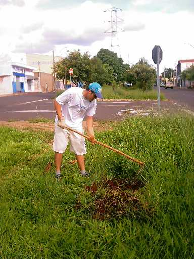

O plantio
deste dia rendeu mais 4 mudas
para o Quarteirão H da Avenida
Henrique Gregori.
Veja as fotos:
 |
Após
quase uma semana de chuvas, Danilo abre
o primeiro aceiro com mais
facilidade. |
|
Alexandre
ajuda na preparação do aceiro para o plantio |
|
Logo
após, a primeira muda está plantada ! |
|
Alexandre
molha a muda de Ipê branco.
Fomos obrigados a plantar esta
muda, devido a um ato
de vandalismo contra o antigo
Ipê Amarelo que estava
no local e foi arrancado.
|
|
A terceira
muda do dia, é plantada |
|
A quarta
muda, uma Espatódia, finaliza o plantio |
Neste plantio,
pudemos perceber que se houvessem períodos
cíclicos de chuva a cada 3
semanas, nós poderíamos
realizar plantios durante o ano
todo.
Enquanto persistirem as
chuvas, estaremos na ativa !
|